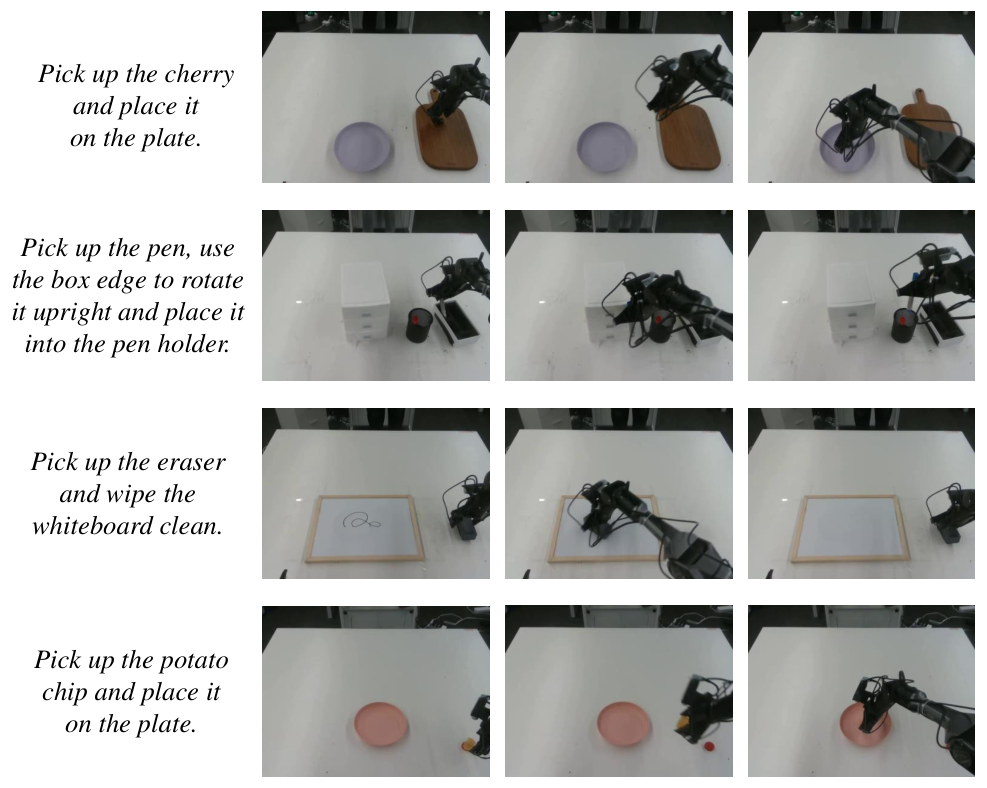

4.1 实验设置
我们在具有同步视觉、触觉、本体感知及动作流的真实环境操控平台上对 TacWAM 进行了评估。
We evaluate TacWAM on a real-world manipulation platform with synchronized visual, tactile, proprioceptive, and action streams.
平台。该机器人平台配备了一个 Agilex Piper 操作臂，操作臂上装有两个 Xense G1-WS 触觉传感器，这些传感器安装在夹持器两侧。视觉观测数据来自顶置摄像头和手腕上的摄像头，从而提供互补的场景级与手部-centric 视角。机器人的状态与动作均通过关节位置来表示，每个动作 token 对应下一个控制步骤的目标关节位置状态。所有感知与控制数据流均在 30 Hz 时刻同步。
Platform. The robot platform uses an Agilex Piper manipulator equipped with two Xense G1-WS tactile sensors mounted on the gripper sides. Visual observations are captured from an overhead camera and a wrist-mounted camera, providing complementary scene-level and hand-centric views. The robot state and action are both represented by joint positions, and each action token corresponds to a target joint-position state for the next control step. All sensing and control streams are synchronized at 30 Hz.
数据。该数据集包含在真实平台上收集的演示数据，包含同步的视觉观测、关节位置状态与动作，以及两个夹持器侧传感器的触觉信号。针对每个任务，我们收集 300 集，每集平均包含约 500 帧。每帧触觉信号包含 SAF 使用的三种空间对齐输入：校正后的触觉外观、密集力场以及网格变形流。所有传感器信号在帧级别上均保持时间同步。
Data. The dataset contains demonstrations collected on the real platform, with synchronized visual observations, joint-position states and actions, and tactile streams from the two gripper-side sensors. For each task, we collect 300 episodes, and each episode contains about 500 frames on average. Each tactile frame contains the three spatially aligned inputs used by SAF: rectified tactile appearance, dense force fields, and mesh deformation flow. All sensor streams are temporally aligned at the frame level.

图 2：现实环境评估任务。该图展示了我们实验中使用的四项接触密集型操作任务的相关文本提示与全景相机观测结果。
任务。我们在四个真实世界中的接触密集型操作任务上进行评估，这些任务包括脆弱的抓取、小物体接触定位、持续接触以及动态手持操作，如图 2 所示：
Tasks. We evaluate on four real-world contact-rich manipulation tasks, which cover fragile grasping, small-object contact localization, sustained contact, and dynamic in-hand manipulation, as shown in Figure 2 :
- •
薯片抓取：需抓住薄而脆弱的薯片，并将其放置到目标盘上，必须精确控制力量，以避免滑动或破损。
Potato-chip grasping: grasp a thin, fragile chip and place it onto a target plate, requiring precise force regulation to avoid slip or breakage.
- •
樱桃抓取：抓取不同大小的物体，此时需要触觉反馈来确认稳定的接触状态。
Cherry grasping: grasp an object of variable size, where tactile feedback is needed to confirm stable contact.
- •
白板擦拭：在沿白板移动时保持持续的表面接触，重点强调压力控制、剪切力及接触连续性。
Whiteboard wiping: maintain sustained surface contact while moving along the board, stressing pressure control, shear, and contact continuity.
- •
双笔旋转：通过动态的双侧接触变化来操控两支笔，要求模型能够呈现不断变化的力分布与旋转动力学。
Two-pen twirling: manipulate two pens through dynamic bilateral contact changes, requiring the model to represent evolving force distribution and rotation dynamics.
如果任务目标在不违反特定任务物理约束的情况下完成，则该试验被视为成功：芯片必须被放置而不破裂或掉落，樱桃必须被稳定握住并放置，白板必须通过持续接触被擦拭干净，笔必须完成所需的旋转动作而不掉落。
A trial is counted as successful if the task goal is completed without violating the task-specific physical constraint: the chip must be placed without breaking or dropping, the cherry must be stably grasped and placed, the whiteboard must be wiped with sustained contact, and the pens must complete the required twirling motion without falling.
基线方法。我们将 TacWAM 与四种代表性基线方法进行了比较，这四种方法包括仅视觉驱动的 VLA、仅视觉驱动的 WAM、触觉策略学习，以及触觉 WAM 建模。所有方法均在相同的任务数据上进行训练与评估，并在适用时使用相同的联合位置动作表示。仅视觉驱动的基线方法利用顶视与手腕相机视图，结合本体感知与任务条件化机制；而触觉基线方法则额外接收同步的触觉观测数据。
Baselines. We compare TacWAM with four representative baselines covering vision-only VLA, vision-only WAM, tactile policy learning, and tactile WAM modeling. All methods are trained and evaluated on the same task data and use the same joint-position action representation when applicable. Vision-only baselines use the overhead and wrist camera views together with proprioception and task conditioning, while tactile baselines additionally receive the synchronized tactile observations.
- •
是基于 Physical Intelligence [28] 的开放世界泛化 VLA 模型构建的 vision-language-action 基准模型。它代表了端到端视觉 VLA 策略类别，这些策略能够直接将视觉观测与任务指令转化为机器人动作，而无需进行明确的视觉或触觉未来预测。
π 0.5 is a vision-language-action baseline built on the open-world generalization VLA model from Physical Intelligence [ 28 ] . It represents the class of end-to-end visual VLA policies that map visual observations and task instructions directly to robot actions, without explicit visual or tactile future prediction.
- •
Fast- WAM 是一种仅基于视觉的世界动作模型基线 [29]。它在训练过程中保留视觉预测共训练机制，但在推理阶段去除显式未来生成行为，从而形成了一种基于视觉预测的 WAM 模型，用于评估 TacWAM。
Fast-WAM is a vision-only World Action Model baseline [ 29 ] . It retains visual predictive co-training during training but removes explicit future generation at inference, providing a visual-predictive WAM comparison for evaluating TacWAM.
- •
RDP 是一种基于反应式扩散策略 [17] 的视觉-触觉策略基础模型。它通过慢-快策略结构利用触觉反馈来实现高触觉交互操作，但它并非那种能够像 WAM 训练目标那样预测未来触觉状态的触觉 world-action model。
RDP is a visual-tactile policy baseline based on Reactive Diffusion Policy [ 17 ] . It uses tactile feedback for contact-rich manipulation through a slow-fast policy structure, but it is not a tactile world-action model that predicts future tactile states as WAM training targets.
- •
VT- WAM 是一个视觉-触觉 WAM 基线模型，能够联合建模视觉未来、触觉未来以及富含接触操作的动作，用于复杂操控任务 [27]。由于没有官方实现版本公开，我们按照论文设计重新实现了 VT- WAM，并在相同数据与动作空间设置下对其进行了训练。
VT-WAM is a visual-tactile WAM baseline that jointly models visual futures, tactile futures, and actions for contact-rich manipulation [ 27 ] . Since no official implementation is publicly available, we reimplement VT-WAM following the paper design and train it under the same data and action-space setting.
评估方案。所有方法均在相同的输入设置下，通过相同数量的训练周期在相同的演示数据上进行训练。我们依据相同的任务定义、成功标准以及现实测试条件序列对每个训练完成的模型进行评估，其中物体姿态与机器人初始配置均在预定义的范围内变化。针对每种方法及任务，我们执行 20 次试验，并以成功执行次数所占的比例作为成功率进行报告。
Evaluation protocol. All methods are trained on the same demonstrations for the same number of epochs under their respective input settings. We evaluate each trained model under the same task definitions, success criteria, and sequence of real-world test conditions, with object poses and initial robot configurations varied within predefined ranges. For each method and task, we run 20 trials and report the success rate as the percentage of successful executions.
4.2 主要结果
为回答 RQ1，主要评估指标用于判断 TacWAM 是否比四个基线模型更提升闭环操控成功率。表 2 列出了各任务及平均成功率。主要比较重点在于任务层面的执行性能；关于触觉预测质量及架构组件的诊断分析则将在下一小节中呈现。
To answer RQ1, the main evaluation measures whether TacWAM improves closed-loop manipulation success over the four baseline families. Table 2 reports per-task and average success rates. The main comparison focuses on task-level execution performance; diagnostic analyses of tactile prediction quality and architectural components are presented in the next subsection.
表 2：主要现实场景操控结果。数据均为 20 现实场景试验中的任务成功率。
定量分析显示，TacWAM在每一项任务上均优于所有基线模型。与每项任务中最强的基线模型相比，TacWAM在薯片抓取、樱桃抓取、白板擦拭以及两笔旋转任务上的成功率分别提高了点、点、点和点。平均而言，TacWAM的成功率达到了，比表现最佳的基线模型（VT - WAM、）高出个百分点。这些提升在白板擦拭和两笔旋转任务中尤为明显，这两项任务最需要持续的接触以及动态的双侧接触推理能力，而纯视觉或反应性触觉的基线模型在解决这些问题时存在较大困难。
Quantitative analysis. TacWAM outperforms all baselines on every task. Compared with the strongest baseline for each task, TacWAM improves success rates by 40.0 points on potato-chip grasping, 10.0 points on cherry grasping, 40.0 points on whiteboard wiping, and 30.0 points on two-pen twirling. On average, TacWAM achieves a success rate of 75.0 % , exceeding the best-performing baseline (VT-WAM, 37.5 % ) by 37.5 percentage points. The gains are especially pronounced on whiteboard wiping and two-pen twirling, the two tasks that most strongly require sustained contact and dynamic bilateral contact reasoning, where purely visual or reactive tactile baselines struggle most.
整体趋势与我们的预期一致：当接触在视觉上较为简单时，仅基于视觉的基线模型具有竞争力；而在需要力量调节、持续接触或双侧接触推理的任务中，触觉基线模型则表现更佳。TacWAM在反应式触觉策略及现有触觉WAM模型中均有所提升，从而凸显了在完整框架中采用机制意识型触觉预测训练的重要性。
The overall trend matches our expectation: visual-only baselines are competitive when contact is visually simple, while tactile baselines improve on tasks requiring force regulation, sustained contact, or bilateral contact reasoning. TacWAM further improves over both reactive tactile policies and existing tactile WAMs, supporting the value of mechanics-aware tactile predictive training in the complete framework.
定性分析。触觉感知与预测性触觉训练的整合主要解决了两个问题。首先，对于不规则小物体的精准抓取问题：在土豆片或樱桃的抓取任务中，由于物体易碎或尺寸不一，仅依赖视觉的基线方法往往完全无法识别物体或过度挤压物体；而触觉反馈能够提供接触与力的直接证据，从而显著提升抓取成功率。其次，在视觉遮挡情况下，机器人无法可靠判断是否建立了接触，或者笔是否正在旋转。仅依赖视觉的模型往往会产生在视觉上看似合理但实际无效的动作，例如擦拭器在白板上滑动时并未保持接触。 触觉观测提供了视觉无法获取的信息，使 TacWAM 能够保持持续的接触状态，并更可靠地处理动态双边交互。下面的力-滚转分析进一步表明，在接触频率较高的完整阶段中，预测得到的合力大小符合真实数据趋势。
Qualitative analysis. The incorporation of tactile sensing and predictive tactile training mainly addresses two problems.
First, precise grasping of irregular small objects: on potato-chip and cherry grasping, where the objects are fragile or of variable size, vision-only baselines frequently miss the object entirely or over-squeeze it; in contrast, tactile feedback provides direct evidence of contact and force, leading to substantially higher success than vision-only policies.
Second, under visual occlusion the robot cannot reliably determine whether contact is established or whether the pens are actually rotating. Vision-only models often produce motions that appear visually plausible but are physically ineffective, for example when the wiper glides over the whiteboard without maintaining contact. Tactile observations provide information that is unavailable from vision, allowing TacWAM to maintain sustained contact and handle dynamic bilateral interaction more reliably. The force-rollout analysis below further shows that the predicted resultant force magnitude follows the ground-truth trend over complete contact-rich episodes.
4.3 性能缩减结果
为回答 RQ2 和 RQ3，我们采用三种联合训练方法来分析触觉历史与 AGT 可见性的作用机制。这些方法构成了一个嵌套序列，逐步去除历史信息并放宽跨流限制，同时保留相同的任务数据、动作表示以及触觉未来预测目标。这种分阶段设计用于检验随着所提出的时间上下文和信息约束被削弱，性能是否会持续下降。图 3 展示了去除触觉历史后使用的两种放宽注意力掩码。表 3 则列出了两个具有丰富接触行为的任务中的成功率。
To answer RQ2 and RQ3, we use three joint-training ablations to analyze the roles of tactile history and AGT visibility. These ablations form a nested sequence that progressively removes history and relaxes cross-stream restrictions, while keeping the same task data, action representation, and tactile future prediction objective. This staged design tests whether performance degrades consistently as the proposed temporal context and information constraints are weakened. Figure 3 illustrates the two relaxed attention masks used after removing tactile history. Table 3 reports success rates on two representative contact-rich tasks.
图 3：用于联合训练消融实验中的注意力掩码变体。Attn-AT 使动作 tokens 能够读取完整的触觉预测序列 。Attn-VT 包含 Attn-AT 的功能，并进一步实现了视觉未来状态 tokens 与触觉未来状态 tokens 之间的双向交互。
表 3：选定接触密集型任务中的性能缩减结果。数据为 20 实际测试中的任务成功率。
没有触觉历史信息。此次消融实验消除了用于测试 及其产生的历史上下文在丰富触觉交互中的作用的触觉历史路径。未使用历史编码器，触觉历史上下文被零值替代，辅助接触事件损失 也被禁用。其他所有关节训练目标保持不变，包括未来触觉预测、解码后的触觉目标、视觉预测以及动作预测。去除触觉历史后，平均成功率从 降至 （ 分），在芯片抓取任务上下降尤为显著（），因为稳定抓取前的力量积累很难仅通过当前触觉锚点来可靠推断。这一结果表明，时间上的触觉上下文提供了超出当前触觉锚点的信息，是 TacWAM 的重要组成部分。
Without tactile history. This ablation removes the tactile history pathway to test whether E hist and the resulting history context are useful for contact-rich manipulation. The history encoder is not used, the tactile history context is replaced by zeros, and the auxiliary contact-event loss ℒ contact is disabled. All other joint-training objectives remain unchanged, including future tactile prediction, decoded tactile targets, visual prediction, and action prediction. Removing tactile history reduces the average success rate from 82.5 % to 55.0 % ( − 27.5 points), with a particularly large drop on chip grasping ( 90.0 % → 50.0 % ), where the force buildup preceding stable grasping is difficult to infer reliably from the current tactile anchor alone. This result suggests that temporal tactile context provides information beyond the current tactile anchor and is an important part of TacWAM.
没有触觉历史 + Attn-AT。这种消融操作从无历史版本开始，仅放宽动作流的触觉可见性。与仅允许动作 tokens 读取纯净触觉锚点 不同，动作 tokens 可以读取完整的触觉预测序列 以及 和其他动作 tokens。视频掩码、触觉首帧因果掩码以及针对视觉锚点的触觉访问机制其余部分保持不变。性能平均下降至 。相反，让动作 tokens 接触未来的触觉预测 tokens 会产生不可靠的捷径：在训练过程中，动作 tokens 可以利用目标衍生的未来预测变量，而在部署阶段则依赖于推理过程中生成的对应数据。 这种训练与测试不匹配现象会降低系统的部署性能，这表明限制条件 对 TacWAM 至关重要。
Without tactile history + Attn-AT. This ablation starts from the history-free variant and relaxes only the action-stream tactile visibility. Instead of allowing action tokens to read only the clean tactile anchor T 0 , action tokens can read the full tactile prediction sequence T 0 : H together with V 0 and other action tokens. The video mask, tactile first-frame-causal mask, and tactile access to the visual anchor are otherwise unchanged. Performance drops further to 37.5 % on average. Rather than helping, exposing action tokens to future tactile prediction tokens creates an unreliable shortcut: during training, action tokens can exploit target-derived future prediction variables, whereas deployment relies on generated counterparts under the inference process. This train–test mismatch degrades deployment behavior, suggesting that the restriction A ← T 0 is important for TacWAM.
没有触觉历史 + Attn-VT。这种去激活方式通过实现视觉预测 tokens 与触觉未来 tokens 之间的直接双向交互，进一步放松了信息结构，同时保留了清晰的锚点语义。具体而言，当前的视觉锚点可以读取触觉锚点，未来的视觉 tokens 可以读取触觉预测 tokens，触觉锚点可以读取当前的视觉锚点，而未来的触觉 tokens 可以读取视觉预测 tokens。触觉流仍保持其第一帧因果内部结构。这种变体几乎崩溃，平均仅达到 （来自 Attn-AT 的 点）和 ，在白板擦拭时尤为明显。完全双向的视频-触觉未来交互似乎会破坏多模态协同训练，并严重降低动作生成能力。 该结果支持了 AGT 对部署一致学习更严格的分离策略。
Without tactile history + Attn-VT. This ablation further relaxes the information structure by enabling direct bidirectional interaction between visual prediction tokens and tactile future tokens, while preserving the clean-anchor semantics. Specifically, the current visual anchor can read the tactile anchor, future visual tokens can read tactile prediction tokens, the tactile anchor can read the current visual anchor, and future tactile tokens can read visual prediction tokens. The tactile stream still keeps its first-frame-causal internal structure. This variant nearly collapses, reaching only 7.5 % on average ( − 30.0 points from Attn-AT) and 5.0 % on whiteboard wiping. Fully bidirectional video–tactile future exchange appears to destabilize multimodal co-training and severely degrades action generation. This result supports AGT’s stricter separation for deployment-consistent learning.
总体而言，这三种消融实验呈现出一致的趋势：随着触觉历史信息的去除以及注意力结构的逐渐放松，性能会下降。这些分阶段的结果提供了确凿证据，表明触觉历史信息以及有限的未来- token可见性对完整的 TacWAM 设计至关重要。
Overall, the three ablations form a consistent trend: performance decreases as tactile history is removed and the attention structure is progressively relaxed. These staged results provide consistent evidence that tactile history and restricted future-token visibility are important to the complete TacWAM design.
未来触觉状态预测。针对 RQ2 项目，我们进一步评估了触觉历史是否能改善整个过程中的力变化预测。对于白板擦拭和双笔旋转动作，我们通过解码预测的触觉状态来重建双侧合力，并计算合力的大小。图 4 展示了 TacWAM 模型与无历史数据变体得到的曲线与真实数据之间的对比。与无历史数据变体相比，TacWAM 能更精准地追踪真实力的大小和时间趋势，这表明触觉历史不仅能提升后续动作的成功率，还能改善未来的触觉预测。
Future tactile state prediction. For RQ2, we further evaluate whether tactile history improves predicted force evolution over complete episodes. For whiteboard wiping and two-pen twirling, we decode predicted tactile states to reconstruct the bilateral resultant wrench and compute the resultant force magnitude. Figure 4 compares the resulting curves from TacWAM and the history-free variant against ground truth. TacWAM tracks both the magnitude and temporal trend of the ground-truth force more closely than w/o History, illustrating that tactile history can improve future tactile prediction rather than only improving downstream action success.
在白板擦拭任务中，这种差异尤为明显：无历史数据的预测结果落后于实际力变化。这种时间延迟表明，在缺乏近期触觉上下文的情况下，模型需要额外的触觉信息才能更新当前接触阶段的估计值。相比之下，触觉历史数据能够反映当前片段之前的互动演变过程，使得 TacWAM 能更迅速地推断当前接触状态，并更少地延迟地预测力变化。这一分析解释了为何在消融实验中去除历史数据会显著降低操作成功率。
The difference is especially clear on whiteboard wiping, where the w/o History prediction lags behind the ground-truth force changes. This temporal delay suggests that, without recent tactile context, the model needs additional incoming tactile evidence before updating its estimate of the current contact phase. By contrast, tactile history provides recent interaction evolution before the current chunk, allowing TacWAM to infer the current contact state more promptly and predict force changes with less delay. This analysis explains why removing history substantially reduces manipulation success in the ablation results.
图 4：关于白板擦拭与两笔书写动作的代表性场景级触觉预测结果。我们根据预测的触觉状态重建双边合力，计算合力大小，并比较 TacWAM 模型与无历史数据的预测结果与真实值在完整场景中的表现。